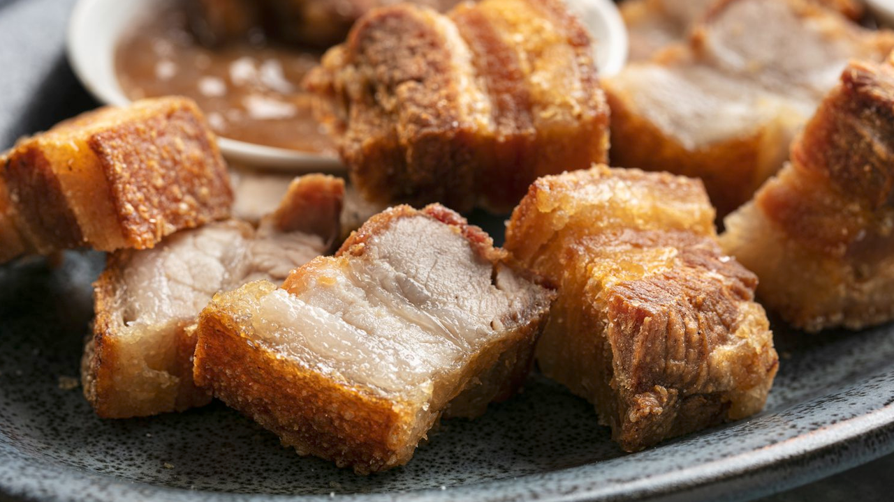

Lechon Kawali
Return to Recipes

Description
Lechon Kawali is a simple deep-fried pork belly dish best served with a side of rice and some dipping sauce.
Ingredients
- 2 lbs. pork belly
- 2 tablespoons salt
- 2 tablespoons whole pepper corn
- 5 pieces dried bay leaves
- 3 cups cooking Oil
- 34 ounces Water
Instructions
- Pour water on cooking pot. Boil.
- Add the pork belly and 1 tablespoon of salt. Put some pepper pepper and bay leaves. Boil for 30 minutes or until meat gets tender
- Remove the meat from the pot and let it cool down for a few minutes
- Spread 1 tablespoon of salt on the pork belly. Make sure to distribute it evenly on all sections
- Start to deep fry the boiled meat. Heat oil on a cooking pot.
- Put each piece of boiled pork belly into the hot oil with extra caution. Fry until crispy. Turn the meat over to completely fry the opposite side until crispy. Note: be extra careful when frying as oil can splatter. You can use the cover of the pot to cover it while oil splatters, but do not cover completely as steam will be trapped. It will cause more splatters.
- Remove the meat from the cooking pot. Arrange on a wire rack to cool down. Slice according to desired portions.
- Serve with lechon sauce.